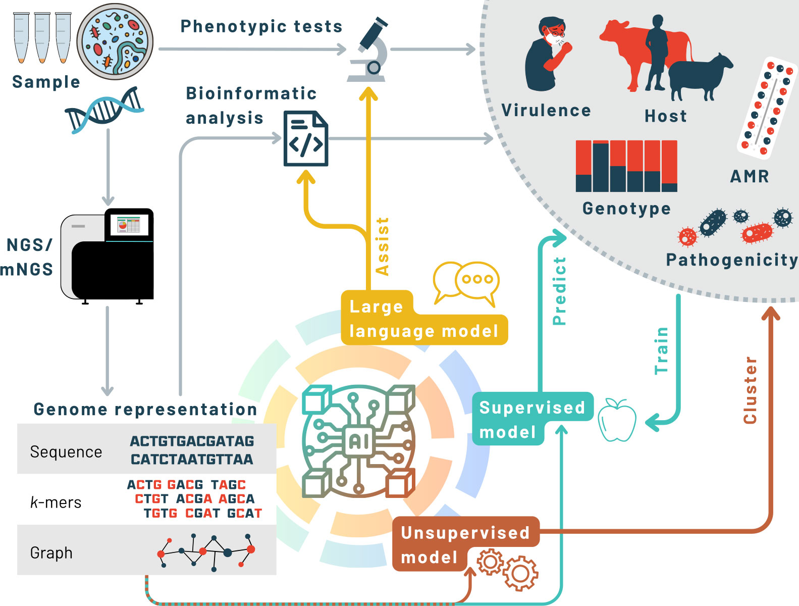
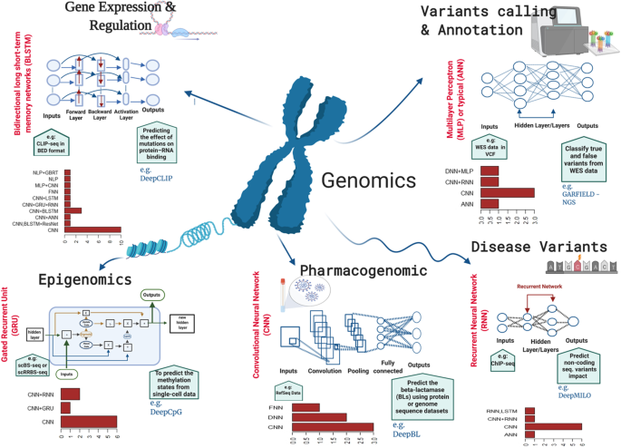

AI and Deep Learning in Life Sciences Research: Unlocking New Frontiers in Genome Biology
At the Sivasakthi Science Foundation, we believe that the future of life sciences research lies at the intersection of artificial intelligence (AI), deep learning, and biology. As we advance into an era where data-driven insights are crucial, AI and deep learning are revolutionizing the way we understand complex biological systems. Our investment in AI and Deep Learning Innovation aims to harness these cutting-edge technologies to accelerate discoveries in genome biology.
Transforming Genome Annotation with Deep Learning
Deep learning revolutionizes genome annotation by enabling automated, high-precision identification of genes, regulatory elements, and functional regions within complex genomes. Utilizing advanced neural networks, deep learning models can accurately annotate large-scale genomic data, significantly reducing the time and effort required for manual annotation. This innovative approach enhances our understanding of genetic functions and interactions, paving the way for breakthroughs in genomics, personalized medicine, and evolutionary studies.
Gene Prediction and Annotation
Deep learning algorithms can accurately predict the locations and functions of genes within a genome, automating the annotation process and identifying previously unknown genes or regulatory elements.
Variant Detection and Interpretation
Deep learning models can identify genetic variants, such as single nucleotide polymorphisms (SNPs) and structural variations, and predict their potential impact on gene function and association with diseases.
Gene Expression Analysis
By analyzing gene expression data, deep learning can uncover complex patterns and relationships between genes, helping to understand regulatory networks and identify key drivers of biological processes.
Evolutionary Genomics
Deep learning can be used to model evolutionary processes, helping to predict how genomes might change over time, understand species divergence, and identify conserved genetic elements across different organisms.
Personalized Medicine
Deep learning enables the integration of genomic data with other biological information, such as epigenomics and proteomics, to predict individual responses to treatments, leading to more effective and personalized medical interventions.